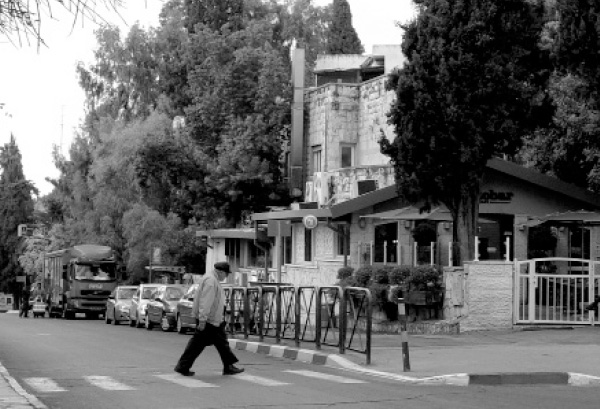

From Gaza Street to Gaza City
When the prime minister declared that he would not evacuate settlements, there were many who breathed a sigh of relief and folded up their protest signs. This is exactly what he wanted - to take the wind out of their sails. He knows how to do this with fiery speeches that will reassure the public. Fortunately, we have immediately understood this time that he is trying to deceive us. In other instances, the fraudulence was revealed less quickly, and in the meantime, those faithful to the cause of Eretz Yisroel calmly went to sleep.

Last week began with Prime Minister Netanyahu’s reassuring declaration: I have no intention of uprooting one single settlement or moving out one single Israeli – period. In response, the nationalist forces loyal to the territorial integrity of Eretz Yisroel sounded the “all clear.” There were those who even felt a bit perplexed in the face of the aggressive campaign against the Prime Minister, when he has no plans whatsoever to dismantle any of the yishuvim in Yehuda and Shomron. Even I sat in front of my keyboard last Sunday, pondering to myself whether I should give favorable treatment to Netanyahu as a means of fortifying his position. After all, even he had finally declared his unequivocal intention to preserve the settlements.
However, we then came to “question time”: If the Prime Minister has no intention of uprooting one single settlement, why is he conducting negotiations with the Arabs? Is he planning to establish a sovereign Arab state in the heart of Eretz Yisroel while leaving the Jewish settlements in place?
This brings us to the process of clarifying the government’s position – and it’s most painful to hear. A “high-ranking official” in the prime minister’s office told the papers that when Mr. Netanyahu says that the Jewish settlements will not be dismantled, he means that they will continue to exist under Palestinian rule. To put it simply, Netanyahu is proposing the transfer of the settlers in Yehuda and Shomron to the Hamas terrorists. This is no joke in honor of the month of Adar; this is an actual headline that the Prime Minister has failed to deny. He has apparently forgotten that this is the same Hamas that has one of the cruelest regimes in the world. It has summarily executed hundreds, if not thousands, of its citizens, simply because they were suspected of opposing their authority. In Hamas’ eyes, every settler in Yehuda and Shomron is a potential Gilad Shalit.
Last week, one of my friends presented me with a proposal for Netanyahu: “He lives on Rechov Aza (Gaza Street) in Yerushalayim, right? Maybe he should move to Gaza City? If this is a legitimate option, that Jews will live under a Hamas regime, why shouldn’t the prime minister adopt this idea for himself?”
But that isn’t all. We’re not just talking about a proposal that no one had considered as realistic for even a moment. This sudden U-turn gives us a close look into the overall conduct of the Prime Minister. He issues clear and unambiguous statements, yet he craftily finds ways how to explain that that wasn’t what he meant, or to be more correct, that he meant not to mean anything. When the Prime Minister declared that he would not evacuate settlements, there were many who breathed a sigh of relief and folded up their protest signs. This is exactly what he wanted - to take the wind out of their sails. He knows how to do this with fiery speeches that will reassure the public. Fortunately, we understood this time that he is trying to deceive us. In other instances, the fraudulence was revealed less quickly, and in the meantime, those faithful to the cause of Eretz Yisroel calmly went to sleep. They relied upon the multitude of false promises that no one ever intended to keep. During the period of the expulsion from Gush Katif, then-Prime Minister Ariel Sharon held his notorious “farm forum,” when he would issue his weekly media spins designed to neutralize the anti-disengagement forces. This time, things look to be just as interesting.
Indeed, it will be most interesting to hear Netanyahu explain why he hasn’t constructed those thousands of housing units that he promised countless times to build in Yehuda and Shomron. It will be most interesting to hear him explain away his promises to build in Area E1 near Ma’ale Adumim. He will apparently give a response along the lines of “I promised that the homes would be built, but maybe it will happen after I give the territory to the Palestinians…”
2.
This is essentially the first time that the Prime Minister is talking about evacuating yishuvim. Until now, he only spoke about a “demilitarized Palestinian state” and settled for general statements on “painful concessions.” This is the first time that he is making a clear pronouncement that Jewish settlements will also be included in the territory of the Palestinian state he is r”l planning to create.
In fact, such a proposal has been hanging in the air for some time. Ever since his famous speech at Bar-Ilan University, it has been clear that Netanyahu intended to take some serious step, although it was never clear what that step would be. Fortunately, during his previous term, he was far too busy dealing with more domestic issues – social protests, the housing crisis, etc., while his sour relationship with the President of the United States stifled the diplomatic process. But Netanyahu didn’t shelve the idea. He continued to hold fast to his vision of being the prime minister who would establish the Palestinian state r”l.
During his current term, however, the situation has become all too apparent. As soon as he returned to office following last year’s Knesset elections, he appointed Justice Minister Tzippi Livni to handle the diplomatic negotiations. This begs the question: Why was there a need to appoint a special cabinet minister for negotiations if he had no intention of uprooting any settlements? Furthermore, is there even a possibility of reaching an agreement without uprooting settlements?
Under these circumstances, it will be extremely difficult to get the public to participate in a meaningful struggle to save the Land of Israel. All nationalist activists with whom we have spoken over the past year claim that the situation is very serious, even grave. However, the people will not answer the call without some significant change in the process. But this change has come.
3.
Anyone who thinks that the situation is lost is making a serious mistake. Eretz Yisroel has experienced many fateful and determined battles when the Jewish People fought and achieved victory. Previous prime ministers had sought to attain peace by giving away the Golan Heights. The slogan “The People Are With The Golan” put a halt to such discussions and turned the Golan Heights into an integral part of the national consensus. The Golan Heights Law, which was passed in part due to this unwavering stance, removed the idea of withdrawing from this vital security region from the public debate, once and for all.
As things stand now, there is neither a signed agreement nor anything concrete on paper. The question now is: Who will apply the greater pressure – the Jewish People or the world? The Prime Minister is currently under a heavy steamroller. The American Secretary of State, Mr. Kerry, will be arriving this week in Eretz Yisroel, to be followed next month by visits to the Middle East by German chancellor Angela Merkel and British Prime Minister David Cameron. They are all coming here with one sole purpose in mind: put maximum pressure on Prime Minister Netanyahu to renounce the truth of our claim to the Land of Israel and agree to return to the 1967 borders. It wasn’t for naught that the Rebbe once made the famous statement regarding Menachem Begin: If he can’t stand up to the pressure, he should “return home honorably” and resign his office in favor of someone who is prepared to deal with the international pressures.
4.
Since the average layman has no understanding of military and security issues, when the Prime Minister speaks about “a military presence in the Jordan Valley” or “American protection along the borders,” he can’t tell whether this is an actual proposal or merely some trial balloon. The Prime Minister’s clear-cut statement and his tone of determination gave the common citizen reason to believe that this really was a serious offer. However, when it comes to “Jewish settlements under Palestinian control,” anyone with even a modicum of intelligence will realize that the Prime Minister has gone too far.
Netanyahu’s recent spin is no different than most of the other spins his office releases. Like all his predecessors who dealt with diplomatic agreements of this type, he is trying to soothe the public with vague statements that he knows have no basis in reality. Rabin declared that “they have not and they will not fire Katyushas from Gaza,” calling his nationalist opponents “cowards of peace.” Sharon proclaimed that if the Arabs fire one rocket from Gaza, he will bomb them with all the force at his command and make no excuses about it. Yet, the Arabs continued to aim their rockets at cities in Eretz Yisroel, as Sharon slept through the noise of the sirens and Iron Dome.
Even Netanyahu explained once that he is handing over Chevron to the Arabs because of a “secret document” he had received from then-President Bill Clinton, promising that we would remain forever in the rest of Yehuda and Shomron.
The people are beginning to wake up, and grass-roots activists are now having their say. The recent campaigns against the next expulsion have resonated with the general public, and they want to take part in the struggle and make their voices heard.
While we see that the fight is now only beginning, on the other hand, it is also “zero hour.” The negotiators are preparing to sign secret documents and enter a new phase of talks that will eventually outline the final agreement the Prime Minister will try and bring before the Cabinet for its approval. The battle is not just for “the day after,” but above all, for “the day before.” Now is the moment of truth in this struggle, and to a large extent, the general public’s reaction will determine the future of the Jewish settlements in Yehuda and Shomron.
Sholom Ber Crombie. "From Gaza Street to Gaza City." Beis Moshiach, no. 914 (February 6, 2014).